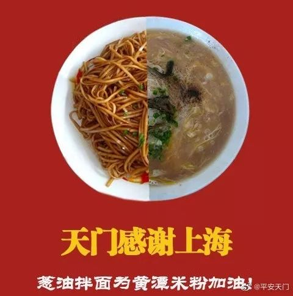

绿皮城
原文链接 备份链接 2020年2月6日。 农历正月十三。 武汉封城第十五天。 天门封城第十四天。 闹哄之后，豆瓣日记今天被暂停使用了。这个消息居然在豆瓣引发了斯德哥尔摩综合症般的辩论。世风日下，文青们都被训练得在大是大非面前排队站位了。豆 …

2020年2月9日。
农历正月十六。
武汉封城第十八天。
天门封城第十七天。
今天居然没有被社区宣传疫情的大喇叭吵醒，一觉安稳睡到了10点半。而我的床丝毫没有想放我走的意思。只好翻身，背对阳光，摸出手机。并不饿，却非常想来一碗黄潭米粉——蛋粉，加一根油条。
要说家乡的味道，惦记却又吃不到的，唯有黄潭米粉了。每年过年回家，都会和马蒙约好，去他家吃一碗正宗的黄潭传统米粉。这几乎成为我们之间某种约定俗成的仪式了。只是他定居武汉之后，父母跟着，粉馆从去年也停了。有次吃粉我问他，你从小吃到大，没吃厌嘛？他笑，并吃不厌，一段时间吃不到还想呢哈哈。也曾和他深入探讨，为何黄潭米粉未能对外拓展市场，让更多人尝到这一传统美食。得出结论：由于工序复杂，或是食材受限，即便本地师傅在外地开店，估计味道也差之甚远。——烂大街的兰州料理就是一个典型的例子。
马蒙是我初中同学，算起来，应该是交往的朋友中相识最久的了。我们考取不同的高中，于是每周通过书信沟通：交流读书写作追星心得、吐槽学校老师教育问题、分享考试游戏把妹经验…三年毕业，竟收获了一沓书信。他当时比我写得好，还投过《萌芽》的新概念。也正是从那时开始，我们互相鼓劲，坚定了写下去的信心。只是没想到后来，我把笔换成了相机。
写到这里我仿佛有点饿了。那么解封之后，黄潭米粉约起？

马蒙 20160211


水妈
长按二维码向我转账
受苹果公司新规定影响，微信 iOS 版的赞赏功能被关闭，可通过二维码转账支持公众号。
原文链接 备份链接 2020年2月6日。 农历正月十三。 武汉封城第十五天。 天门封城第十四天。 闹哄之后，豆瓣日记今天被暂停使用了。这个消息居然在豆瓣引发了斯德哥尔摩综合症般的辩论。世风日下，文青们都被训练得在大是大非面前排队站位了。豆 …
原文链接 备份链接 （期待你明天的乱炖） 2020年2月5日。 农历正月十二。 武汉封城第十四天。 天门封城第十三天。 按这个新冠病毒14天的潜伏期上限算，今天我们终于可以嘘口气，以示自己解除隐患了。上午还跟伯伯说，我们要不要喝点酒庆祝一 …
原文链接 备份链接 2020年2月4日。 农历正月十一。 武汉封城第十三天。 天门封城第十二天。 今天报道一名叫何辉的武汉医护接送车队志愿者染病身故的消息，几经辟谣，仍未反转——志愿者何辉终是走了，只不过不是网传照片上的那位。他是英雄吗？ …
原文链接 备份链接 2020年2月3日。 农历正月初十。 武汉封城第十二天。 天门封城第十一天。 昨天文章莫名其妙就被404了。开工首日，网监果然上班了。我当然无fuck说。好今天不谈疫情。仍在焦虑中困去，大清早还画了个地图，本来就没衣服 …
原文链接 备份链接 2020年2月1日。 农历正月初八。 武汉封城第十天。 天门封城第九天。 怎样才不叫敷衍呢大姐姐，双黄连都可以再次被抢光，日头底下并无新事啊。我知道我逞强写下的这些，都是无足轻重的废话，因为我还在家里坐月子。既没有李承 …